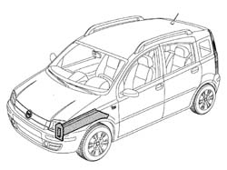
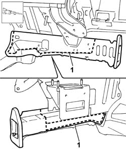
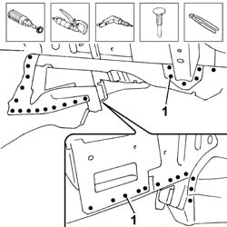
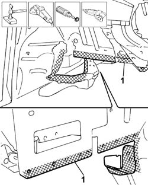
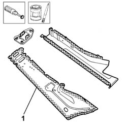
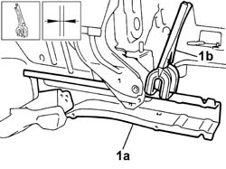
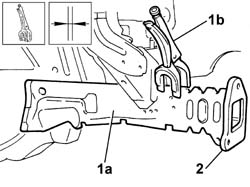
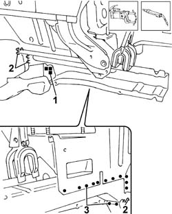
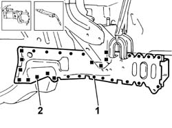
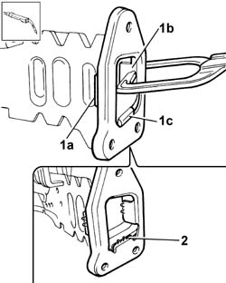

7210A35 R.R. FRONT SIDE PANEL (assembly)
- Path
- Procedures > 72 PANELS AND FRAME > 7210 REMOVING REFITTING > 7210A STRUCTURAL ELEMENTS (FRONT PART) > 7210A35 R.R. FRONT SIDE PANEL (assembly)
- Kind
- repair procedure (removal / refitting; the operation number is the code)
- Applies to
- all engines; all production periods
- Interactive page
- https://sloeber94.github.io/elrnDB-fPnd/en/#/2753338
Applies to: all engines; all production periods
 Removing
Removing
 Refitting
RefittingCheck if any of the connected parts are deformed by checking body alignment dimensions. Use appropriate measurement tools (reference rigs, templates or gauges).
Straighten the body if necessary.

Applies to: all engines; all production periods
1. Use a hacksawing machine to follow the cutting lines shown in the figure.
Remove the cut parts.

Applies to: all engines; all production periods
Use a rotary brush to remove paint to gain access to the weld spots.
1. Use a chamfering machine to remove the weld spots shown in the figure.
Drill out any weld spots not accessible to the chamfering machine.
Use a chisel and mallet to remove spots drilled previously.
Trim the cut edges from the car.

Applies to: all engines; all production periods
Straighten the car edges using a mallet and profiled stake.
Use a grinding wheel to remove the spot weld residues.
Use a rotary brush to clean treated areas.
1. Apply electroweldable paint to the edges of the bodyshell which will be involved in the welding later on.

Applies to: all engines; all production periods
1. Use a grinding wheel to remove the corrosion-proofing from around the inner and outer edge of the parts.
Apply electric weld paint finish to the edges to be welded.

Applies to: all engines; all production periods
Refitting
Removing1. Correctly position the inner part of the side panel (1a) on the vehicle and secure it using the self-locking clamps (1b).

Applies to: all engines; all production periods
1. Offer up the replacement side panel cover (1a) and secure it to the iner part and to the bodyshell using self-locking clamps (1b).
Check the alignment and ensure the surrounding gaps are even.
2. Offer up the replacement front crossmember attachment flange and secure it to the side panel using self-locking clamps.
Check the alignment.

Applies to: all engines; all production periods
Remove the replacement side panel cover and front crossmember attachment flange.
1. Use a MIG welder to fill weld the areas shown in the figure.
2. Use a MIG welder to seam weld the areas shown in the figure.
3. Use a spot welder to weld the inner section of the side panel in the areas shown in the figure.

Applies to: all engines; all production periods
Fit the replacement side panel cover and fasten it to the inner section and to the bodyshell using self-locking clamps.
1. Use a spot welder to weld the inner section of the side panel in the areas shown in the figure.
2. Use a MIG welder to fill weld the areas shown in the figure.

Applies to: all engines; all production periods
Fit the replacement crossmember attachment flange and secure it using self-locking clamps.
1. During the fitting operation, check that the tab (1a) for the replacement part is positioned outside the box section, that the tab (1b) is positioned inside the box section and that the lower tab (1c) is positioned outside the box section.
1. Use a spot welder to weld the inner section of the side panel in the areas shown in the figure.
2. Use a MIG welder to seam weld the areas shown in the figure.

Applies to: all engines; all production periods
Correct any deformations in the panel using a profiled stake and mallet.
Use a grinding wheel to level the welds
Use a rotary brush to clean the newly-welded areas.
Apply rust-proofing to newly-welded areas.
Seal the joint lines between the part and the car.